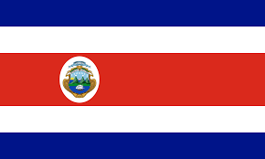

Felipe Solano
About Me
Hello! My name is Felipe Solano. I am currently learning web development and programming. I enjoy building websites and learning new technologies related to HTML, CSS, and JavaScript.
My Interests

Costa Rica is one of the few countries in the world without a standing army, having abolished it in 1948 to invest in education and health care.